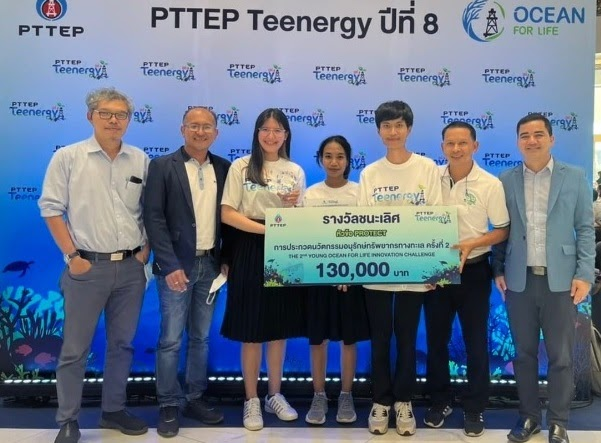
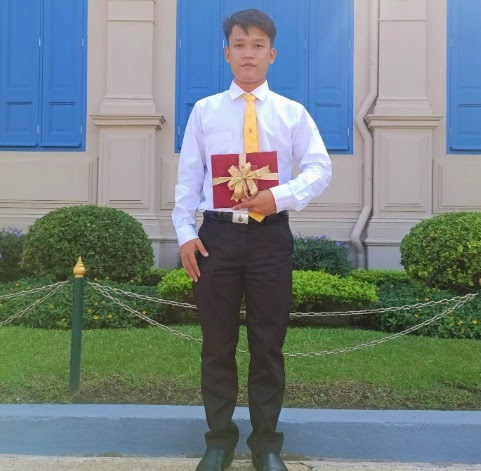

รางวัลการประกวด “นวัตกรรมอนุรักษ์ทรัพยากรทางทะเล”

ประกวดรอบชิงชนะเลิศ ณ ICONSIAM 4 พ.ย. 2565
ผลงาน: นวัตกรรมทุ่นดักจับขยะอัจฉริยะบริเวณปากคลองเพื่อสกัดขยะไหลลงสู่ทะเล และเรือสามารถผ่านได้
ทีม Golden Mermaid จาก มทร.ศรีวิชัย โดยมี ผศ.นราธร สังข์ประเสริฐ, รศ.ดร.ชาตรี หอมเขียว และ อ.บุญรัตน์ บุญรัศมี
เป็นที่ปรึกษา
รางวัลรองชนะเลิศอันดับ 1: เครื่องดูดไมโครพลาสติก (Microplastic Catcher) จาก
มหาวิทยาลัยมหิดล
รางวัลรองชนะเลิศอันดับ 2: หุ่นยนต์สำรวจและกำจัดอุปกรณ์ล่าสัตว์น้ำที่ถูกทิ้งร้าง จาก
จุฬาลงกรณ์มหาวิทยาลัย
นายโชคชัย แจ่มน้อย รับเหรียญรางวัลพระราชทานเรียนดี

คณะวิศวกรรมศาสตร์ ขอแสดงความยินดีกับ นายโชคชัย แจ่มน้อย
นักศึกษาหลักสูตรสาขาวิชาวิศวกรรมคอมพิวเตอร์ ชั้นปีที่ 4
ได้รับเกียรติเป็นตัวแทนเข้ารับ เหรียญรางวัลพระราชทานเรียนดี
จากผู้แทนพระองค์ รัชกาลที่ 10 ณ ศาลาสหทัยสมาคม ในพระบรมมหาราชวัง
พระบาทสมเด็จพระเจ้าอยู่หัว ทรงพระกรุณาโปรดเกล้าฯ ให้
นายเกษม วัฒนชัย องคมนตรี เป็นผู้แทนพระองค์
ออกรับคณะกรรมการอำนวยการ วิศวกรรมสถานแห่งประเทศไทยฯ
และคณะกรรมการบริหารกองทุนเพื่อการศึกษาและวิจัยทางด้านวิศวกรรมศาสตร์
ในพระราชูปถัมภ์ สมเด็จพระบรมโอรสาธิราชฯ สยามมุฎราชกุมาร
โดยมีการมอบเหรียญรางวัลเรียนดีแก่นิสิต นักศึกษา คณะวิศวกรรมศาสตร์
ที่มีผลการเรียนดีเด่น จำนวน 48 คน
วันที่ 15 ธันวาคม 2565 ณ ศาลาสหทัยสมาคม ในพระบรมมหาราชวัง